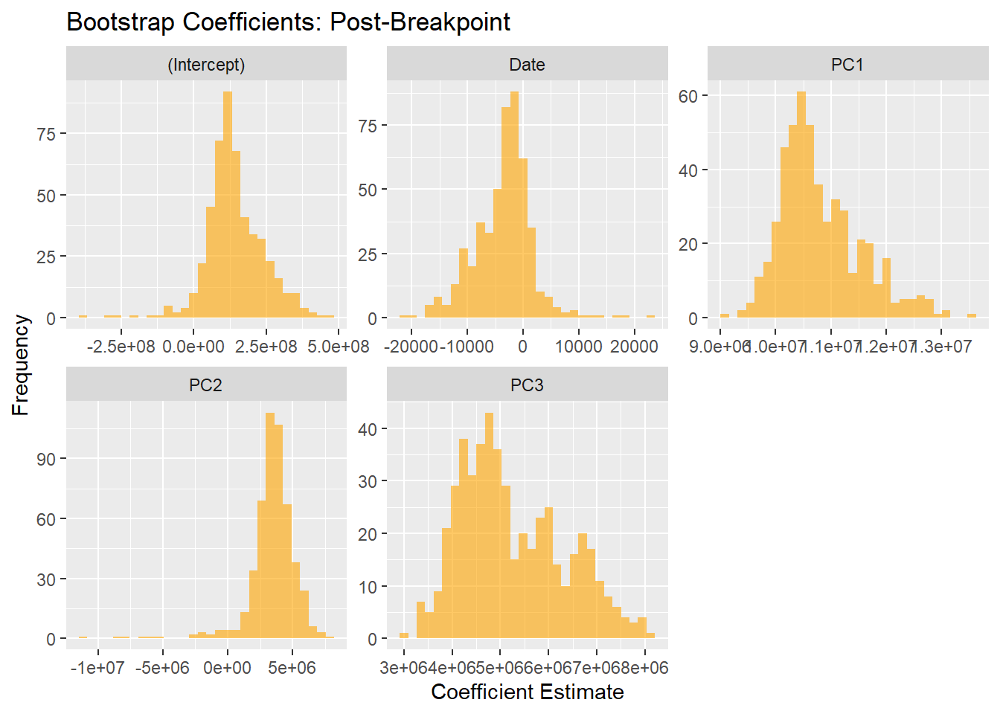

MTA Ridership Analysis: Trends, Correlations, and Piecewise Regression with PCA
Figure 1: Correlation Matrix
The correlation matrix is a table that shows how strongly the ridership trends of different MTA systems are related to each other.
- Values close to 1: This means a strong positive relationship. For example, if subway ridership increases, MTA Bus and Metro-North Railroad ridership are likely to increase as well.
- Lower values: This indicates a weaker relationship, meaning the ridership of one system does not necessarily follow the trends of another.
Key Insights
- Subway Ridership, MTA Bus, and Metro-North Railroad are highly correlated (with values greater than 0.9). This means their ridership trends are very similar, likely because these systems serve similar groups of commuters.
- Bridges and Tunnels have weaker correlations with other systems. This is probably because they cater to car commuters rather than public transit riders.
Figure 2 to 5: Explanation of the Output Charts**
- Subway Ridership Chart
- Shows changes in subway ridership over time, with a clear line and data points for key values.
- High Correlation Group Chart
- Displays trends for systems like Metro-North Railroad (MNR) and NYCT Bus, which move similarly due to high correlation.
- Mid Correlation Group Chart
- Focuses on moderately related systems like MTA Bus and Bridges and Tunnels (BT), showing partial similarity in trends.
- Low Correlation Group Chart
- Highlights Staten Island Railway (SIR), whose trends are unique and less connected to others.
Key Insights
- The charts group systems by correlation, making it easy to see which ones behave similarly or differently over time.

Why We Switched to PCA-Based Regression
We started with a regular piecewise regression, but severe multicollinearity (Table 1: VIF Summary Before and After Breakpoint) made it unreliable:
- Pre-Breakpoint: Predictors like LIRR (67.75) and NYCT Bus (54.89) had high VIF values.
- Post-Breakpoint: Multicollinearity worsened, with extreme VIFs like MTA Bus (427.64).
Multicollinearity Assessment: Pre and Post-Breakpoint VIF
| Predictor | VIF | Period | Interpretation | |
|---|---|---|---|---|
| AAR...1 | AAR | 1.652115 | Pre-Breakpoint | Low multicollinearity |
| BT...2 | BT | 16.292980 | Pre-Breakpoint | Severe collinearity |
| LIRR...3 | LIRR | 67.750219 | Pre-Breakpoint | Severe collinearity |
| MNR...4 | MNR | 50.442760 | Pre-Breakpoint | Severe collinearity |
| MTA.Bus...5 | MTA.Bus | 43.812684 | Pre-Breakpoint | Severe collinearity |
| NYCT.Bus...6 | NYCT.Bus | 54.893647 | Pre-Breakpoint | Severe collinearity |
| SIR...7 | SIR | 4.602399 | Pre-Breakpoint | Low multicollinearity |
| AAR...8 | AAR | 12.583974 | Post-Breakpoint | Severe collinearity |
| BT...9 | BT | 4.131596 | Post-Breakpoint | Low multicollinearity |
| LIRR...10 | LIRR | 265.715550 | Post-Breakpoint | Severe collinearity |
| MNR...11 | MNR | 164.969156 | Post-Breakpoint | Severe collinearity |
| MTA.Bus...12 | MTA.Bus | 427.643658 | Post-Breakpoint | Severe collinearity |
| NYCT.Bus...13 | NYCT.Bus | 295.236601 | Post-Breakpoint | Severe collinearity |
| SIR...14 | SIR | 11.680780 | Post-Breakpoint | Severe collinearity |
Solution: PCA-Based Regression
We switched to PCA (Principal Component Analysis) to:
1. Combine highly correlated variables into independent components.
2. Eliminate multicollinearity while preserving key trends.
This made the piecewise regression model stable and more reliable.
Fitted Piecewise Regression Models (First Two Charts)
- Pre-Breakpoint (Blue)
- Shows subway ridership before disruption.
- Ridership fluctuates seasonally with clear peaks and drops.
- The model (blue lines) closely matches the real data (black dots).
- Shows subway ridership before disruption.
- Post-Breakpoint (Orange)
- Shows subway ridership after disruption.
- Ridership drops sharply but begins recovering steadily over time.
- The model captures this recovery trend accurately.
- Shows subway ridership after disruption.
Bootstrap Coefficients (Last Two Charts)
- Pre-Breakpoint Coefficients (Blue)
- Histograms show the distribution of model coefficients for components like Intercept, Date, and PCA components (PC1, PC2, PC3).
- The peaks in the histograms mean the coefficients are stable and reliable.
- Histograms show the distribution of model coefficients for components like Intercept, Date, and PCA components (PC1, PC2, PC3).
- Post-Breakpoint Coefficients (Orange)
- Similar to the Pre-Breakpoint chart but for the recovery period.
- Coefficients are more spread out, reflecting greater variability in the data during recovery.
- Still, the peaks suggest the model remains trustworthy.
- Similar to the Pre-Breakpoint chart but for the recovery period.
Summary
- The piecewise models effectively capture trends before and after the disruption.
- The bootstrap analysis confirms the models are stable, even with some variability post-breakpoint.

Residual and Q-Q Plots: Pre-Breakpoint
Residual Plot:
- This chart shows the residuals (errors) against the fitted values.
- Residuals are spread unevenly around the zero line, indicating that the model struggles to capture patterns perfectly.
Q-Q Plot:
- The Q-Q plot compares residuals to a theoretical normal distribution.
- Deviations from the red line suggest that the residuals are not perfectly normal, especially at the extremes.
Residual and Q-Q Plots: Post-Breakpoint
Residual Plot:
- Residuals are more scattered and less centered around zero, showing larger errors in the model.
- This reflects the more volatile data in the post-breakpoint period.
Q-Q Plot:
- Residuals deviate further from the red line, particularly on the lower end.
- This indicates non-normality, suggesting the model struggles with extreme variations in the data.
Key Takeaway
The pre-breakpoint model performs better than the post-breakpoint model, as residuals are smaller and closer to normal. The post-breakpoint period shows higher variability, making it harder to predict accurately.